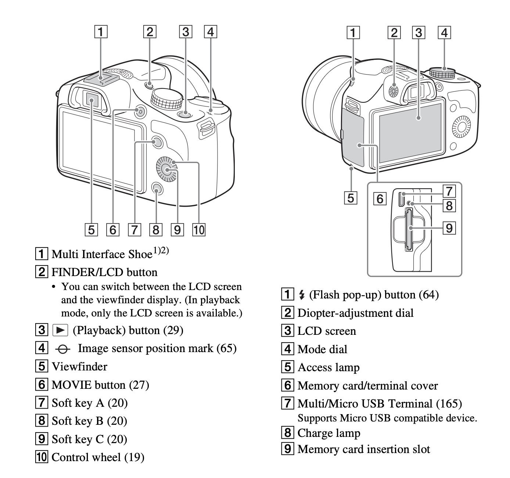
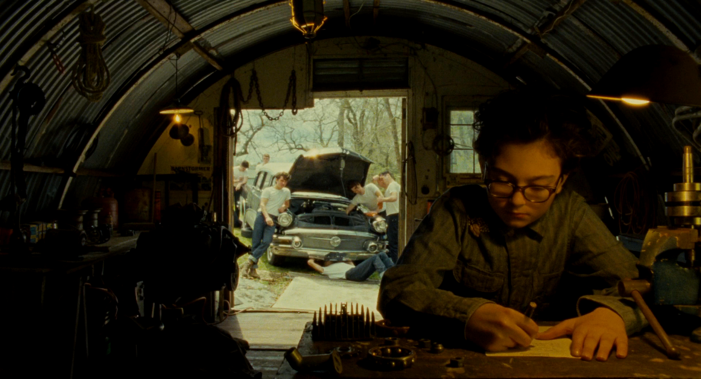

Sony a3000 Mirrorless




"the distance between the closest and farthest objects that appears acceptably sharp in a photograph."
or
"how much of the image is in focus."

A photo with a deep depth of field will show subjects in the foreground and background in focus.

Untitled, Unreleased #4 (2003), Gregory Crewdson

OMG I'm Being Killed (2019), Petra Collins

Moonrise Kingdom (2012), dir. Wes Anderson
A photo with a shallow depth of field will show only the subject in focus, while the rest of the image will be blurry.

Moonlight (2016), dir. Barry Jenkins

Siobhan in my mirror (1992), Nan Goldin

Marilyn; 28 Years Old; Las Vegas, Nevada; $30 (1990-92), Philip-Lorca diCorcia
Due Tuesday 9/15.